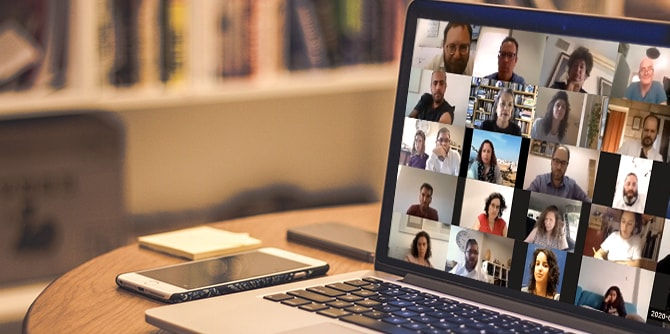

בצל משבר הקורונה נפגשו עמיתות ועמיתי תוכניות המנהיגות של המכון ליום הלימוד המשותף השני לשנה זו, שעסק בשאלות ובתחזיות המאקרו על תמונת העתיד של העולם ופרס את השאלות הבוערות ביותר בשדות הפעולה השונים שבהם מעורבים העמיתים.
את היום פתחו שתי הרצאות של מומחים חיצוניים: פרופ' יולי תמיר, פרופסור לפילוסופיה, נשיאת מכללת שנקר ושרת החינוך לשעבר, הציגה את תפקידה המרכזי של מדינת הלאום במהלך המשבר ואת הנחות היסוד הפוליטיות הנוגעות לשאלות הריבונות הלאומית וההקשר המקומי: כיצד נראית הלאומיות בעידן הקורונה ובמציאות שלאחריה? כיצד יתעצבו מחדש המערכות הציבוריות ומה אפשר ללמוד ממצב משברי זה על הכוחות העתידיים שיעצבו את עולמנו?
בהמשך התפצלו העמיתים למפגשים חוצי-תוכניות ולמדו על מרחבי ההשפעה המגוונים שבהן עוסקות תוכניות המכון השונות.
תוכנית מנדל לפיתוח מנהיגות בקהילה החרדית, בהובלתו של חבר סגל התוכנית
ד"ר ליאור אלפרוביץ', הציגה את ההתנהלות הציבורית במאבק נגד התפשטות נגיף הקורונה, וחשפה את האופנים השונים של ההתמודדות הקהילתית בחברה החרדית.
מיקי נבו, מנהל תוכנית מנדל למנהיגות נוער, הציג בשיתוף עם העמיתים את המשבר שחווים ארגוני החינוך הבלתי פורמלי שניצבו למול האתגר המורכב של שימור עבודה חינוכית וערכית עם בני נוער על כל הרצף ומכלל הקבוצות החברתיות בישראל. עמיתי
תוכנית מנדל למנהיגות בתרבות יהודית, בשיתוף עם מנהל התוכנית
מישאל ציון, תיארו את האתגרים שהציגה הקורונה לעולם התרבות והקהילה במצב שבו עולם התרבות נכנס לקיפאון עמוק, ואת ההזדמנויות והיוזמות שנוצרות בתווך.
תוכנית מנדל לפיתוח מנהיגות חינוכית בצה"ל, בהובלתו של מנהל התוכנית
ליאור פרי, עסקה בסוגיית המנהיגות בעת חירום ובתנאי קיצון כחלק מליבת מנהיגותם של מפקדים בצה"ל.
לדברי העמיתים, יום הלימוד העמיד אותם אל מול תפיסות המנהיגות שלהם ופתח אפשרות לחשיבה שונה המאתגרת תפיסות מוכרות. היכולת להביט על הדברים מפרספקטיבות שונות היא יכולת חשובה, אשר הצורך בה ניכר בזמן משברי מעין זה. הם אף הדגישו את
חשיבותה של תפיסה מערכתית ואת הנחיצות של שיתופי פעולה בין מרחבי השפעה. אחד העמיתים סיכם ואמר כי "נוכח השינויים הצפויים, עולה ההכרה שמנהיגים ופעילים חברתיים נדרשים לפרוס את כל הרשתות במים ולנצל הזדמנויות...".

{kind=link}